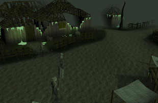
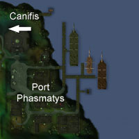
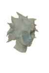
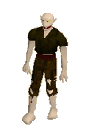

")
Port Phasmatys (Members)
Warning | Introduction | Location | Points of Interest | Personalities
Quests | Terrors of Morytania | Miscellaneous
Quests | Terrors of Morytania | Miscellaneous
Warning
To get to Port Phasmatys, initially you will have to go through the Haunted Woods, which are filled with a vile assortment of creatures, from leeches to vampires (which can be up to level 72), and some are highly aggressive. These will cause extreme difficulties for lower level adventurers, so it's best to hold off visiting until your Combat level is high enough to deal with such problems.
Unless you have completed the Ghosts Ahoy quest, you will need two ectotokens to enter Port Phasmatys, which can be earned by using the Ectofuntus just north of the town. You will also need a Ghostspeak Amulet (from the Restless Ghost) to understand anything the life-challenged inhabitants say. You can get a new Ghostspeak Amulet by talking to Father Urhney in the Lumbridge Swamps.
Introduction

In recent times, Port Phasmatys has picked up some of its former trade, and travellers from across the world can be found there buying and selling goods. Not to the people of the port, however, for they need no food, clothes or drink. Even the pirates that dock at Port Phasmatys have a dry time.
Location

West, across the Haunted Woods, is the werewolf town of Canifis, and beyond that lies Varrock, the capital of Misthalin.
Points of Interest

On the eastern side of town are the docks, and though few ships are moored there now, the size of the docks gives some indication of how busy Port Phasmatys must have been before Necrovarus and the Ectofuntus.
There is not much to buy in town, as the inhabitants have no need for worldly goods, but you might find the few living people about have something of value, or some mission that they need completed.
Personalities

Pirate Pete sometimes lies in order to get what he wants, but that probably comes with his job as a pirate. He's the only man that knows the way to Braindeath Island, and he likes to keep it that way. If you're talking to Pirate Pete, try not to turn your back.
|

Bill is one of the few pirates that will take time to explain things to landlubbers (which would be anyone that isn't a pirate), but that's got more to do with his lack of a crew than any kind of honest choice.
|
|
| Pirate Pete can be found on the small docks north of Port Phasmatys. | Bill Teach can be found in the Green Ghost Inn. |
|

Velorina is one of the few citizens of Port Phasmatys that seems interested in doing anything about Necrovarus. She is not capable of leaving the town, though, so she might need some help getting Necrovarus to release the town.
|

When he was still alive, Necrovarus was some kind of priest or mage with an unhealthy interest in ectoplasm. He came to the town from the Eastern Lands, and now will not leave the Ectofuntus, a source of endless power.
|
|
| Velorina can be found wailing at her plight in her house north of the Green Ghost Inn. | Necrovarus can be found at the Ectofuntus. |

Gravingas looks like a simple rabble-rouser, standing in the town square with his sign and shouting about the town's oppression under Necrovarus. He prefers to think of himself as an interested citizen, though, and even if Necrovarus released his grip on the town Gravingas would find something to shout about.
|

Ak-Haranu is a traveller from the Eastern Lands, as you can tell from his strange dress, odd accent, and magnificent sword. Judging by his sword and his interests, there is little doubt that he is a powerful warrior.
|
|
| Gravingas can be found ranting and raving in the town square. | Ak-Haranu can be found at the southern end of the Port Phasmatys docks. |

Robin is an archer of great renown, whose skills must be incredible to have earnt such fame. He has not let it go to his head, of course... Well, actually, he has. If you want to talk to Robin, be prepared to get called 'peasant' a lot.
|
| Robin can be found in the Green Ghost Inn. |
Quests
The following quests can be started in Port Phasmatys:
- Rum Deal (Members)
- Cabin Fever (Members)
- Ghosts Ahoy (Members)
- Rocking Out (Members)
Terrors of Morytania

Morytania is a nation that seems to live in perpetual gloom, and bats, being nocturnal, are common there. The smaller bats, such as those found around Port Phasmatys, are little more than a nuisance. |

Ordinary leeches are a minor irritation to jungle explorers and adventurers wandering through swamps. The leeches of the Haunted Forest, however, are bloated blood-hungry creatures more than capable of shrugging off the salt you might use on their lesser cousins. Beware also that leeches will drain your skill levels temporarily.
|
|
| Leeches can be found in the Haunted Wood west of Port Phasmatys. |

While most of the population of Port Phasmatys have resigned themselves to their fate, some have gone less willingly, and have been cast out from the town. These dire spectres wander the land nearby, looking to find a little warmth in the few living creatures that come their way.
|

Vampires are the ruling race of Morytania and wander freely throughout the land. If the Ectofuntus should ever fail, the vampires would be able to return to Port Phasmatys, and all trade there would certainly die. Vampires are difficult opponents, but not terribly aggressive.
|
|
| Tortured Souls can be found north and west of Port Phasmatys. | Vampires can be found in the Haunted Woods west of Port Phasmatys. |

While normal vampires are dangerous, the older and more evil vampires are terrible foes. They leap from the swampy waters of the Haunted Woods to attack anyone that strays too close, driven by a hunger for blood. These vampires are the greatest danger in the Woods, so it's best to avoid pools of water wherever possible.
|
| These vampires can be found by wandering close to pools of water in the Haunted Wood. |
Miscellaneous
- Worshipping at the Ectofuntus may seem a bit evil, or just odd, but it is one of the best ways of training your Prayer.
- There is a brewery beneath the Green Ghost Inn where you can brew your own beer and cider. If you don't know how to brew, Metarialus is there to tell you how.
- If you want to avoid going through the Haunted Woods, and have completed Ghosts Ahoy, simply use your ectophial to teleport there. You'll need to refill it at the Ectofuntus if you want to use it again.
- If you drop your ectophial it will smash. To replace it speak to Velorina.
- Port Phasmatys has the closest furnace to a bank anywhere in RuneScape.
- The general store in Port Phasmatys stocks buckets and pots, which can be useful if you want to spend time at the Ectofuntus.
- Ak-Haranu sells bolt racks, which will be very useful if you happen to enjoy using Karil's crossbow from the Barrows.

More articles in
Cities and Towns
|
|